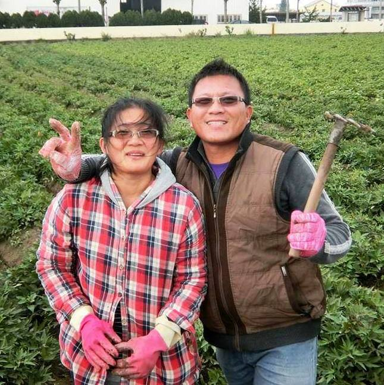

郭子媽
雲林口湖源鄉地瓜
源鄉地瓜是我們最後一位拜訪的農友，不同於水林鄉中地瓜田遍佈的景象，源鄉地瓜位處口湖鄉，一個滿是蚵農的濱海小鎮。
郭子媽與她的先生因為喜歡鄉下自然單純的生活，義無反顧地放棄原本模板工人的工作。選擇不灑農藥與化肥的耕作的方式，讓他們必須加倍努力，才能栽種出慣行產量的一半。
郭子媽告訴我們今年地瓜因為天候與病蟲害的關係，NG的地瓜有將近一半的比例。然而，在格外品的再利用上，卻苦無更好的解決方法。想要送加工廠，做成乾燥的地瓜條，不過有機的加工廠不多，送去開膜的加工費又不便宜。我們到郭子媽的倉庫，看看剛收下來的地瓜。麻布袋裡裝滿個頭嬌小的地瓜，不過歪了點、扭了點，但更顯得有生命力。
「你知道我們說ㄘㄠˋ ㄏㄩㄣ，但其實壞掉的地瓜是香的嗎？」
撥開那條壞掉的地瓜有股清香，還有郭子媽與她的先生對這片土地一股腦的熱情。